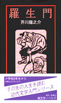
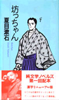
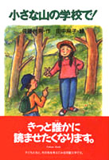
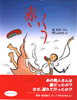
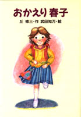
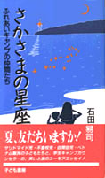

| オモドックの「コドモブックス」シリーズは子どもたちが大人になるための踏み台となる本を提供しています。 |
| ■『たけくらべ』（文豪ブックス：中学高校生以上） |
|
| |
著者：樋口一葉 発売：星雲社 発行：オモドック 定価：本体1900円＋税 体裁：B6変形判、160頁 内容：難しい文語体が上段、現代語訳の口語体が下段の2段組み。吉原遊郭・花魁・お歯黒ドブ等の詳細解説付き。 ［本を購入する］ |
| ■『羅生門』（純文学ノベルズ第2巻：小学校高学年以上） |
|
|  |
著者：芥川龍之介 発売：星雲社 発行：オモドック 定価：本体1500円＋税 体裁：B6変形判、160頁 内容：原文のイメージを大切にしながらも中高生に読みやすい現代語かな漢字に改めた最新版子ども文学全集 ［本を購入する］ |
| ■『坊っちゃん』（純文学ノベルズ第1巻：小学校高学年以上） |
|
|  |
著者：夏目漱石 発売：星雲社 発行：オモドック 定価：本体1500円＋税 体裁：B6変形判、240頁 内容：原文のイメージを大切にしながらも中高生に読みやすい現代語かな漢字に改めた最新版子ども文学全集。 ［本を購入する］ |
| ■『小さな山の学校で！』（児童読み物：小学校中学年以上） |
|
|  |
作者：佐藤州男・作 田中麻子・絵 発売：星雲社 発行：オモドック 定価：本体1350円＋税 体裁：A5判、160頁 内容：山奥のな学校の子供たちが、お話発表会で無口を克服していく物語。子供たちのお話発表が劇中劇のような展開で面白く展開していく。 ［本を購入する］ |
| ■『赤いくつ』（絵本：幼児から小学校低学年向け） |
|
|  |
作者：郭充良・ぶん はらみちを・え 発売：星雲社 発行：オモドック 定価：本体1500円＋税 体裁：A4変形判、32頁 内容： 平和と戦争をテーマにした少女スニの無国籍ものがたり。終戦直後、日本から朝鮮半島に帰る人たちを乗せた浮島丸が、沈没した史実が作品のモチーフになっている。 ［本を購入する］ |
| ■『おかえり春子』（児童文学：小学校高学年以上） |
|
|  |
作者：丘 修三・作 武田知万・絵 発売：星雲社 発行：オモドック 定価：本体1350円＋税 体裁：A5判、160頁 内容：もと養護学校教員の経歴を持つ著者による、障害を持つ子をテーマにした児童文学短編集。 ［本を購入する］ |
| ■『さかさまの星座』（ボランティア・エッセイ：中学生以上） |
|
|  |
著者：石田易司 発売：星雲社 発行：オモドック 定価：本体1250円＋税 体裁：B6変形判、240頁 内容：朝日新聞厚生文化事業団が伊勢湾の多徳島で行ってきた障害児のキャンプのキャンプ長が綴ったボランティア・エッセイ。 ［本を購入する］ |